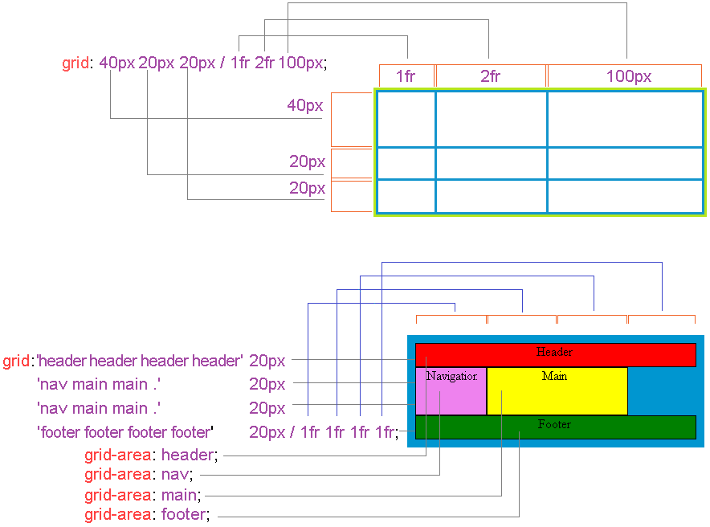

Свойство grid — определяет количество, наименование и ширину столбцов и строк в макете сетки, задает шаблон макета сетки, ссылаясь при этом на имена областей элементов, которые задаются с помощью свойства grid-area, задает размер неявно созданных строк и столбцов в контейнере сетки макета, а так же позволяет указать как работает алгоритм автоматического размещения для неявно созданных элементов макета, указывая как они будут размещены в сетке макета.
.item {
grid: none |
grid-template-rows / grid-template-columns |
grid-template-areas |
grid-template-rows / grid-auto-columns |
grid-auto-rows / grid-template-columns |
grid-template-rows / grid-auto-flow grid-auto-columns |
grid-auto-flow grid-auto-rows / grid-template-columns |
initial | inherit;
}
<div class = "grid-container">
<div class = "item-a">Header</div>
<div class = "item-b">Main</div>
<div class = "item-c">Footer</div>
<div class = "item-d">Navigation</div>
</div>
<style>
.grid-container {
display: grid;
grid: repeat(4, 40px) / 1fr 1fr 1fr 1fr;
}
.item-a { grid-area: 1 / 1 / 2 / 5; }
.item-b { grid-area: 2 / 2 / 4 / 4; }
.item-c { grid-area: 4 / span 4 / 5; }
.item-d { grid-area: 2 / 1 / span 2 / 2; }
</style>